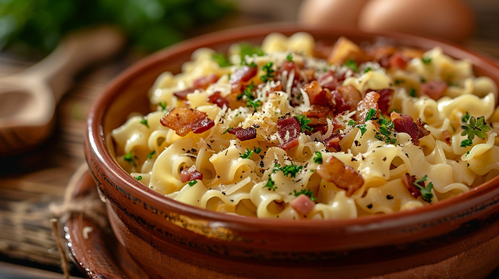

Soft Cheese Pasta
Home

Description
Tasty pasta cooked in a mouth-watering soft cheese sauce, with grass fed beef.
Ingredients
- Sainsbury soft cheese
- Wholeweat pasta
- Lean grass fed beef
- Vegetables of your chosing
Steps
- Place 80 grams of Wholeweat pasta in a bowl
- Add 100ml of water to the bowl
- Boil the pasta for 5-10 mins. Drain the pasta once it is cooked
- Add 100-130 grams of lean grass fed beef to a non-stick pan
- Throughly cook the beef for 10-15 mins
- Chop vegetables of your choice and add to the pan with the beef
- Place vegetables and beef into a plate with the pasta
- Add 30 grams of Sainsbury soft cheese to the plate, and serve!